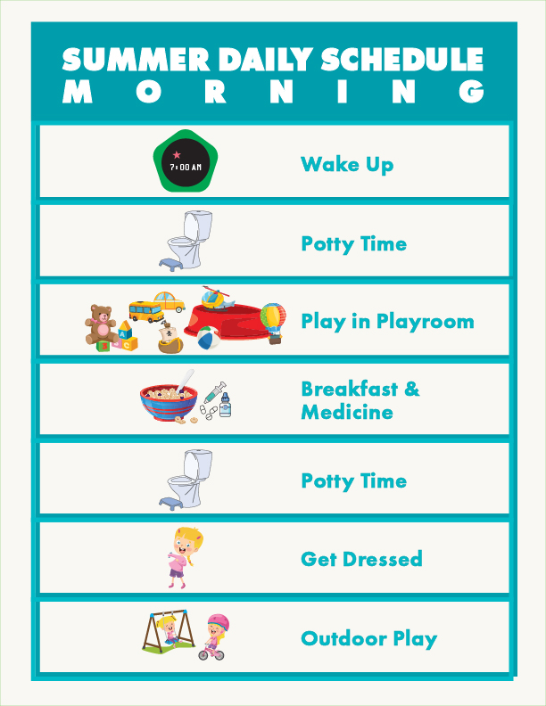
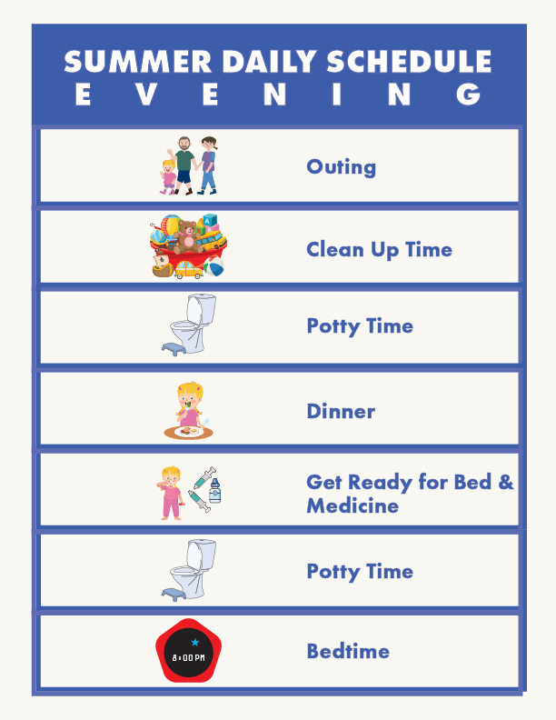

1. Morning Track
High-contrast layout detailing time constraints, morning medicine checklists, and step-by-step preparation blocks using a calming teal interface structure.
A human-centered visual communication layout framework designed to assist transitions, track daily routines, and support sensory schedules.
Everyday routines require clear, unambiguous signaling, especially when managing pediatric sensory support. Standard commercial scheduling tools often fail to balance specific household workflows with consistent visual markers. This project treats daily routine management for a five-year-old child as an accessible user experience problem: converting complex daily workflows into high-contrast, easily scannable, and color-coded print layouts.
The system relies on a consistent visual grid, matching vector iconography, and specific color theory rules to separate daily shifts (Teal for Morning, Green for Mid-Day, Blue for Evening) paired with tangible token reinforcement mechanics tailored for early childhood development.

High-contrast layout detailing time constraints, morning medicine checklists, and step-by-step preparation blocks using a calming teal interface structure.

Configured with standard reading times, structural learning windows, and activity blocks utilizing a focused bright green brand profile.

Manages wind-down routines, clean-up times, and explicit bedroom transition workflows built within a deep blue palette.

A star-focused token grid designed to establish overnight targets and validate tracking goals through visual verification indicators.
Print-ready component layout sheet containing uniform, matching vector star items configured to scale perfectly across chart slots.

A singular, physical interface component designed to limit anxiety during bedtime adjustments through strict token validation logic.

Gamified sequential progress layout map using interactive step nodes (1-10) to celebrate and visually track milestone goals.

Companion print sheet featuring uniform, circular tokens designed to slot cleanly into the progressive step nodes along the tracking path.